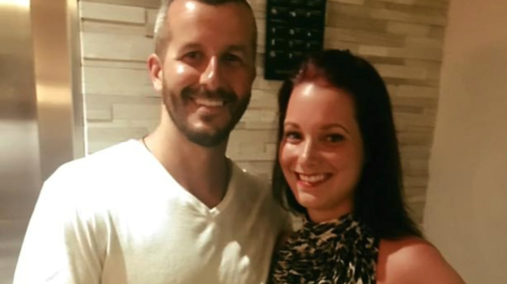
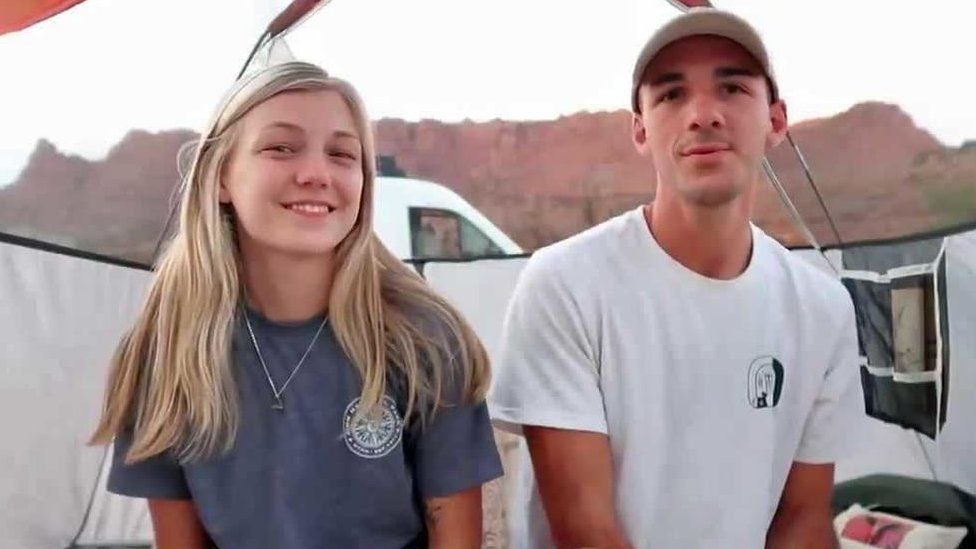
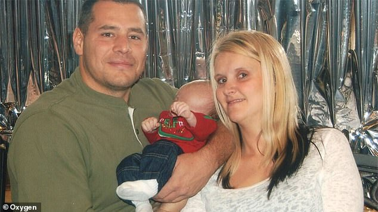

Shannan Watts and husband Chris Watts, Who Killed her and her two children (abc13.com)

Gabby Petito and Boyfriend Brian Laundrie, who is suspected to have involvement in her disappearance and murder (bbc.com)

Crystal Rodgers and her husband, who is her suspected murderer (dailymail.co.uk)
Following the disappearance of Gabrielle Petito, a lot of news has come to light about how often domestic violence can turn deadly, and how a lot of the women found dead in the past year had been killed by their partner. Many other bodies were discovered during the search, yet the general public was never even aware these people were missing. 6 additional bodies were found during this search, showing that a lot of missing persons cases don’t gain a lot of traction within the media.
When these cases gain traction in the media, it allows the case to more forward more quickly. In regard to Gabby Petito, her case gained a lot of traction on the popular app Tik Tok, and this helped to spread the word so everyone began looking for her, and attempting to solve her case. The country wide search was one of the reasons she was found so quickly, as everyone was looking for her and hoping for her safe return.
bbc.com
46% of women per year are killed by their intimate partner. This statistic continues to grow and more and more cases keep coming up. Intimate violence accounts for 15% of all violent cases brought to the police. Women account for 80% of the victims killed by their partner.
A lot of these cases begin with law enforcement being called right before the murder. There are normally signs of domestic abuse, and normally the woman does not want to press charges, out of fear. The Petito case is one of many where the cops were involved right before the young woman went missing. There are many reasons why women don’t want to press charges, ranging from fear, children, and financial reasons.
Typically men who murder their partners follow something known as a “homicide timeline” that police are learning how to better track. Normally these men have records of previous stalking or abuse. They dive into relationships very fast. There is normally a trigger, such as the relationship ending or the woman wanting distance from the man. This leads to a change of thinking, and the planning of the homicide. A very well known case is Chris Watts, who met someone new and wanted to get rid of his wife so he could start a new life with this new woman. There are many different sorts of triggers, the two main ones being meeting someone new, and the relationship coming to an end at the hands of the woman.
Currently, another young girl has gone missing, her mother desperately trying to get her the same media coverage as Petito had. A young 20 year old girl from California, who vanished three weeks ago after getting into a fight with her boyfriend. Her mother claims her daughter's boyfriend had just been released from a rehab facility and was living on the streets. Click below to help in the search for Lateche Norris:
by clicking the image above, you will be taken to a website describing exactly what Lateche looks like, and what she was wearing the night that she went missing.